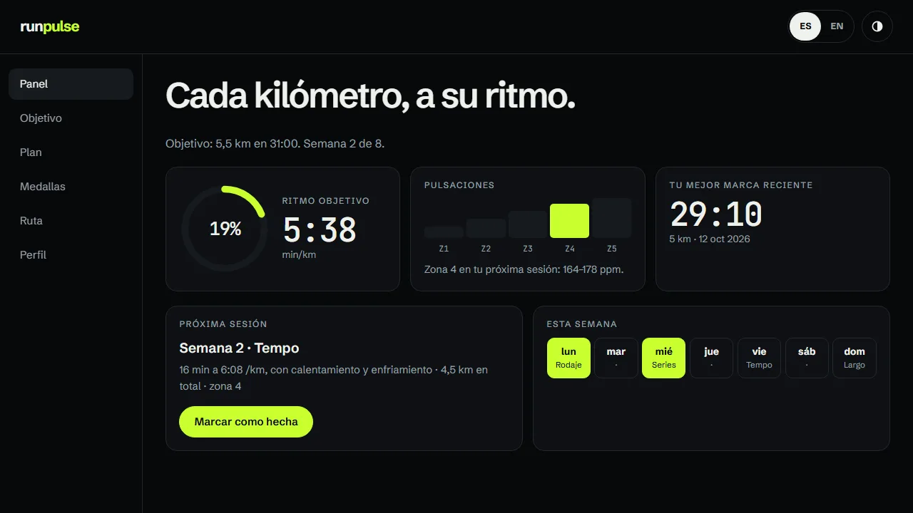

runpulse
Una web app de running: pones el objetivo que quieras (5 km, 5,5 km, una media maratón…) con el tiempo que quieras y te calcula el ritmo, las pulsaciones y un plan de entrenamiento semana a semana. Si el objetivo es imposible, no te deja crearlo. Registras tus marcas para ganar medallas y puedes pedir una ruta circular desde tu ubicación. Es un proyecto de aficionado: los planes son orientativos y los datos se quedan en el navegador.

Qué hace
- Objetivo libre: cualquier distancia y tiempo, con ritmo medio, tiempo por kilómetro, pulso estimado y semanas mínimas.
- Validador que bloquea los objetivos imposibles: más rápidos que el récord del mundo o con una mejora demasiado grande para las semanas que hay.
- Plan semanal con rodajes, series, tempo y tirada larga, con los ritmos ajustados cada semana y sesiones que se marcan como hechas.
- Medallas por distancia, por tiempo, por récord personal y por constancia, que se quedan guardadas.
- Ruta circular desde tu ubicación o desde un punto del mapa, con Leaflet y OpenStreetMap.
Cómo funciona
Sin frameworks. Los cálculos usan fórmulas conocidas (Riegel, el VDOT de Daniels y el pulso máximo de Tanaka) y los comprobé con valores de referencia y casos raros en Node. Los datos se guardan en el navegador a través de una capa separada, para poder cambiarla algún día por una base de datos.
Todo lo que viene de fuera (datos guardados y copias importadas) se vuelve a validar campo a campo. Para la ruta, el servicio de OpenStreetMap no da circuitos: pruebo varias veces cambiando el tamaño de un circuito hasta que mide lo que pido.
Lo probé con un navegador controlado por código: contraste en los dos temas, teclado, 320 píxeles, texto al 200 %, sin localStorage y con datos dañados.
Lo que aprendí
- A pasar fórmulas de entrenamiento a código y a probarlas con valores de referencia.
- A validar datos de entrada, también los que vienen de fuera, y a bloquear lo imposible en el propio formulario.
- A usar Leaflet con OpenStreetMap y a calcular un circuito por aproximaciones.
Domótica